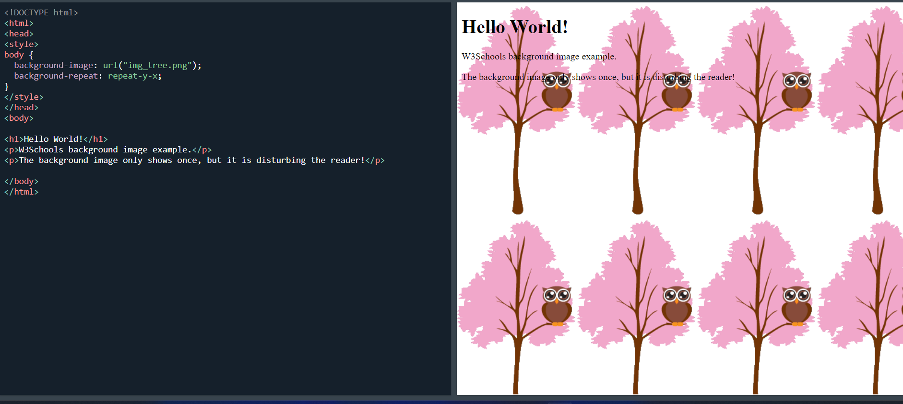

This paragraph has its own background color.
We are still in the div element.make it a inline

background Sets all the background properties in one declaration
background-attachment Sets whether a background image is fixed or scrolls with the rest of the page
background-clip Specifies the painting area of the background
background-color Sets the background color of an element
background-image Sets the background image for an element
background-origin Specifies where the background image(s) is/are positioned
background-position Sets the starting position of a background image
background-repeat Sets how a background image will be repeated
background-size Specifies the size of the background image(s)
A dotted border.
A dashed border.
A solid border.
A double border.
A groove border.
A ridge border.
An inset border.
An outset border.
No border.
A hidden border.
A mixed border.